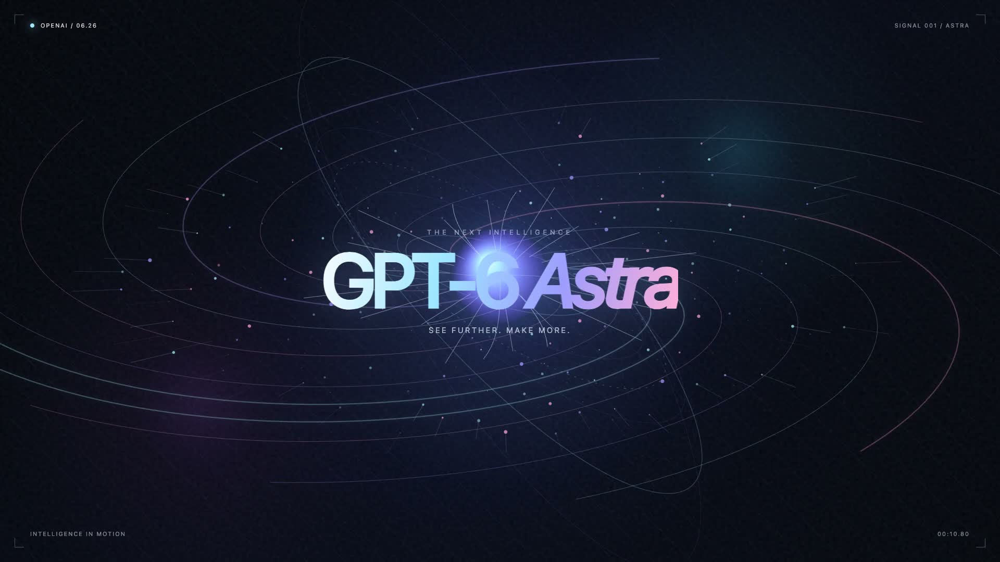

01
全模型 API 聚合站
适合开发者调用、低延迟直连与多模型一站式接入。
访问 TryAllAPI
独立制作主视觉 / Intelligence in Motion
本页整理 GPT-6 Astra 相关的国内体验入口、可复现实测提示词与能力观察。重点不在单轮回答，而在它是否能把复杂目标拆成可执行步骤，并在软件与工具之间持续推进。
面向不同使用习惯的三种入口。第三方服务请先独立验证资质、价格和数据处理规则。
01
适合开发者调用、低延迟直连与多模型一站式接入。
访问 TryAllAPI02
适合网页端免梯对话，以及轻量级工作流体验。
打开镜像导航03
用于处理海外账户支付门槛。请在付款前确认服务归属。
查看充值通道以下提示词展示面向空间、游戏、视频及真实软件操作的任务方向。
SPATIAL REBUILD
“帮我还原这个 3D 场景。”
输入参考图片后，尝试完成空间解算并构建可交互的 3D 场景网格。
GAME PROTOTYPE
“帮我制作一个超级马里奥游戏。”
覆盖关卡脚本、物理碰撞与逻辑调试，生成可试玩原型。
MEDIA PRODUCTION
“为 GPT-6 Astra 制作一个宣传视频，要求连续流畅的转场、高级的动效、丰富的视觉效果，直接在新的文件夹里创建，一定要独立设计。”
任务涵盖时间轴规划、素材管理与动效视频工程的生成。
WORLD BUILDING
“在新的文件夹里，制作一个类似《我的世界》的游戏，高还原度，但是整体是恐怖氛围的。”
结合体素渲染机制与低光照氛围，为沙盒玩法构建暗黑风格。
OS AGENT
“接管我的浏览器，在 Canvas 站点上我有一幅图片，你使用其中的画笔工具，尝试复刻那张图片。”
通过视觉反馈、鼠标轨迹与笔刷参数，持续迭代画面复刻。
01
通过识别屏幕画面、控制光标点击与键盘输入，尝试完成排障、多表联动与依赖安装等真实电脑任务。
02
不只产生代码片段，也可将资产摆放、灯光物理、试玩与 Bug 排查整合到游戏原型的制作循环中。
03
面向数学与科研数据分析的观察强调：价值取决于多阶段推理是否能稳定衔接，而非单题得分本身。
以下数字为投稿资料中的主张，并非本仓库自行测试或背书的结果。
| 维度 / 项目 | 测试表现 / 定价 | 说明 |
|---|---|---|
| ARC-AGI-3 悟性测试 | 99.9% | 衡量面对陌生抽象任务时的泛化推理能力 |
| BenchCAD 几何重建 | 95.9% | 根据参考图像或多视角点云还原 CAD 模型的准确度 |
| FrontierMath Level-4 | 97.6% | 高难度前沿数学科研解题得分 |
| API 输入价格 | $10 / 100万 Token | 资料称约为上一代 Sol 的 2.5 倍 |
| API 输出价格 | $50 / 100万 Token | 资料称任务综合成本与上代基本持平 |
连续高强度执行约 30 分钟时，可能出现中断或无响应，需要人工提示介入。
UI 与文案容易出现固化风格；配色、密度与表达仍应由人主动设定边界。
自主生成前端时，次级按钮与辅助标签可能过多，留白与信息层级需要审阅。
在特定编码场景下，其他轻量模型仍可能以微弱优势领先，应以实际任务测试为准。